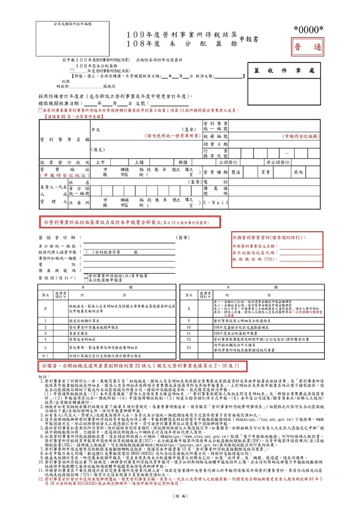

營利事業所得稅申報

【01】申報期間
每年5月1日至5月30日與每年9月1日至9月30日
【02】稅局公文
- 財政部
- 台財稅字第11200686900號
(訂定「一百十二年度營利事業所得稅結算申報案件擴大書面審核實施要點」，並自即日生效。) - 台財稅字第11204603090號
(營利事業因嚴重特殊傳染性肺炎疫情影響免辦理112年度營利事業所得稅暫繳之規定) - 台財稅字第11104615470號
(營利事業因嚴重特殊傳染性肺炎疫情影響免辦理111年度營利事業所得稅暫繳之規定) - 台財稅字第11004598580號
(營利事業因嚴重特殊傳染性肺炎疫情影響免辦理110年度營利事業所得稅暫繳之規定) - 台財稅字第10904595840號
(營利事業因嚴重特殊傳染性肺炎疫情影響免辦理109年度營利事業所得稅暫繳之規定) - 台財稅字第10904556490號
(財政部各地區國稅局受理營業人因嚴重特殊傳染性肺炎(COVID-19)疫情影響申請退還營業稅溢付稅額審核作業原則) - 台財稅字第10904533690號
(核釋因應嚴重特殊傳染性肺炎疫情相關延期或分期繳納稅捐事宜) - 台財稅字第10300588330號
(營利事業已繳納之國外稅額及大陸稅額准予扣抵暫繳稅額之規定) - 台財稅字第09804080141號
(自98年度起非採試算方式計算之暫繳稅額在2000元以下者免辦暫繳) - 台財稅字第851927069號
(公司變更會計年度為曆年制其所得稅暫繳稅額之計算釋疑)
- 台財稅字第11200686900號
- 北區國稅局審查一科
- 北國稅審一字第11100006756號
(為研訂111年度營利事業各業所得額及同業利潤標準，請惠予轉知所屬會員公會提供修訂意見及依式填寫修訂意見調查表(如附件)，並請貴會彙整後於111年5月6日前回覆本局，俾供修訂前開標準之參考，請查照)
- 北國稅審一字第11100006756號
- 中區國稅局
- 中區國稅四字第1070004253號
(貴屬會員如使用Windows Vista及Windows XP（含）以下版本作業系統者，自107年6月26日起將無法使用營業稅網路申報服務，請協助轉知會員，儘早更新作業系統，建議升級至Windows 7（含）以上版本，以免影響107年5-6月期營業稅申報，轉請查照)>
<■ kirigakuretora：TLS問題>
- 中區國稅四字第1070004253號
【03】計算公式
【031】前一年度會計年度預估暫繳
\[ \text {(12) 稅額} = \text {(11) 應納稅額} * 0.50 \]
【032】同業利潤標準
\[ \text {(15) 稅額} = \text {(11) 營業收入} * \text {(12) 同業利率標準} + \text {(13) 營業外收益} - \text {(14) 營業外費損} \]
\[ \text {(16) 應納稅額} = \text {(15) 稅額} * 0.20 \]
【033】擴大書審純益率標準
\[ \text {(14) 稅額} = (\text {(11) 營業收入} + \text {(12) 營業外收入} )* \text {(13) 擴大書審申報純益率} \]
\[ \text {(16) 應納稅額} = \text {(15) 稅額} * 0.20 \]
【04】書面資料
【041】對照表
- 稅務行業標準分類暨同業利潤標準查詢系統
- 各業擴大書審純益率、所得額及同業利潤標準
【042】申報書
- 351、352、353 營利事業所得稅扣繳稅額繳款書
- 357 營利事業所得稅結算稅額繳款書
- 358 營利事業所得稅結算稅額自動補報補繳繳款書
- 355 營利事業所得稅暫繳稅額繳款書
- 353 外國平臺業者彙報轉付所得
- 353 外國營利事業跨境銷售電子勞務
【043】工作流程
- 會計師辦理所得稅查核簽證申報須知
【05】網路服務申辦
【051】線上網站
- 財政部電子申報繳稅服務網
- 財政部網路繳稅
【052】申報應用程式預設值
【052-1】備份申報檔案預設路徑
(DriverName):/Data/tmp/（PeaTdb+西元徑年月日時分秒）.trc【052-1】系統預設儲存檔案預設值
Windows Registry 有以下地方需要檢查：
HKEY_CURRENT_USER\Software\Microsoft\Windows\CurrentVersion\Explorer\Shell Folfer【052-2】變更申報檔案純文字檔案預設程式
Windows Registry 有以下地方需要檢查：
HKEY_USERS\S-1-5-21-2971007210-3119629156-231266564-1001_Classes
HKEY_CURRENT_USER\Software\Microsoft\ApplicationAssociationToasts
HKEY_CURRENT_USER\Software\Microsoft\CurrentVersion\Explorer\FileExts
HKEY_CURRENT_USER\Software\Microsoft\Windows\Shell\Associations
HKEY_CURRENT_USER\Software\Microsoft\Windows\CurrentVersion\Explorer\UserSignedIn
HKEY_CURRENT_USER\Software\Classes\申報檔案純文字檔案副檔名_auto_file
HKEY_CURRENT_USER\Software\Classes\申報檔案純文字檔案副檔名Windows 10 Registry 有以下地方需要檢查：
HKEY_CURRENT_USER\Software\Microsoft\Windows\Roamin\OpenWith\FileExts\申報檔案純文字檔案副檔名【052-3】申報應用程式安裝過程紀錄
於Cmd執行以下命令：
PEAINSTALL.exe/Log=“(DriveName):/FolderAddress/LogFileName”
msiexec.exe /i File.msi /L*i*w*e*u "(DriveName):/FolderAddress/LogFileName" 【052-3】dotNet Framework安裝
安裝申報應用程式前確認使用者環境是否已經安裝以下基礎：
- 4.81:ndp481-x86-x64-allos-enu
- 4.8:ndp48-x86-x64-allos-enu
- 4.72:ndp472-kb4054530-x86-x64-allos-enu
- 4.71:ndp471-kb4033342-x86-x64-allos-enu
【052-4】申報檔案純文字檔案編碼變更(Big5轉Utf-8)
上傳國稅局檔案規格為Utf-8，確認純文字檔案儲存時使用的應用程式為Notepad或者Excel?Notepad預設規格為UTF-16，Excel預設規格為UTF-8
▍ C#程式寫作注意事項：
system.text.encoding
https://learn.microsoft.com/en-us/dotnet/api/system.text.encoding?view=net-7.0 https://dobon.net/vb/dotnet/string/getencodingobject.html
dotnet Core寫作時，注意system.text.encoding (需要System.Text.Encoding.CodePages)
https://dotblogs.com.tw/supershowwei/2022/02/20/114914 https://learn.microsoft.com/en-us/dotnet/api/system.text.encoding.codepage?view=net-7.0
﹍﹍﹍﹍﹍﹍﹍﹍﹍﹍﹍﹍﹍﹍﹍﹍﹍﹍﹍﹍﹍﹍
▍ VBA程式寫作注意事項：
ADODB.Stream (限定UTF-8)
https://learn.microsoft.com/en-us/sql/ado/reference/ado-api/stream-object-properties-methods-and-events?view=sql-server-ver16
Scripting.FileSystemObject
https://learn.microsoft.com/en-us/office/vba/language/reference/user-interface-help/filesystemobject-object
﹍﹍﹍﹍﹍﹍﹍﹍﹍﹍﹍﹍﹍﹍﹍﹍﹍﹍﹍﹍﹍﹍
【052-4】UTF-8 BOM 檢查
專有名詞0xEF 0xBB 0xBF，用以標示檔案是以UTF-8、UTF-16或UTF-32編碼
▍ C#程式寫作注意事項：
System.Text.Encoding.UTF8Encoding()
https://learn.microsoft.com/en-us/dotnet/api/system.text.utf8encoding?view=net-7.0
https://dobon.net/vb/dotnet/string/getencodingobject.htmldotNET Core 6之後版本設定無此問題
﹍﹍﹍﹍﹍﹍﹍﹍﹍﹍﹍﹍﹍﹍﹍﹍﹍﹍﹍﹍﹍﹍
▍ VBA程式寫作注意事項：
VBA:Position=3
﹍﹍﹍﹍﹍﹍﹍﹍﹍﹍﹍﹍﹍﹍﹍﹍﹍﹍﹍﹍﹍﹍
【052-4】Trailing Whitespace、Leading Whitespace 行尾行前空白檢查
人工製作Notepad、Excel CSV檔案匯入時將不必要Character字元給移除
▍ C#程式寫作注意事項：
System.String.TrimStart()
https://learn.microsoft.com/en-us/dotnet/api/system.string.trimstart?view=net-7.0
https://dobon.net/vb/dotnet/string/trim.htmlSystem.String.TrimEnd()
https://learn.microsoft.com/en-us/dotnet/api/system.string.trimend?view=net-7.0
https://dobon.net/vb/dotnet/string/trim.htmlString.Replace()
https://learn.microsoft.com/en-us/dotnet/api/system.string.replace?view=net-7.0
https://dobon.net/vb/dotnet/string/replace.html﹍﹍﹍﹍﹍﹍﹍﹍﹍﹍﹍﹍﹍﹍﹍﹍﹍﹍﹍﹍﹍﹍